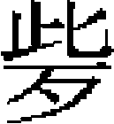

雲南湖廣四川等處蠻夷
雲南溪洞諸蠻 大理金齒蠻 羅羅斯 車里 烏撒烏蒙東川芒部 禄余 八番順元諸蠻 田萬頃 宋隆濟 廣西上下江諸蠻 黄聖許 岑毅 海北海南諸蠻 四川溪洞諸蠻
雲南溪洞諸蠻。至元十三年，羅匐甸官禾者阿禾必降。是年十月，雲南行省調蒙古、爨、僰諸軍征白衣和泥一百九砦，得户四萬。又攻金齒落落廣甸、瑶甸及斜烏蒙秃老蠻，高州、筠連等州。烏蒙阿謀歸舊侵藤串縣地。是月，與安南鄰境七十城門部酋答公，遣其人名摩耳者來乞降。又提吕、提邦兩部來降，饑，行省發禀賑之。未幾，提吕子達量，爲提索所禽，行省給榜招提索，使釋達量，提索聽命。
二十三年，蒙乃土官長子殆昔，鄰境土官弗里皮之婿也，蒙乃不以位與長子，而與次子，弗里皮與殆昔同攻之。朝廷諭弗里皮，如得蒙乃地，許令其婿統之。是歲，又征驃甸大部馬。
二十四年，木龍蠻奴他謀告阿勒沙村阿加之子殺凹村頭目剌些，行省下麗江路軍民宣撫司，命出見雲南王，免其罪。是年，雲南右丞愛魯以蒙古軍一千，師宗孫勒寸白軍一千，農士富民丁三千，征維摩蠻者我滅鐵赤必匝，尋出降。
三十年，行省征習普蠻阿浪普龍華扎山些賊土官生，皆破之。逃者，命普安路總管步木普丁府嶍峨頭目矣豆等，賫榜招出。是年，七十城門蠻密察挾讐殺大甸土官阿鄰，繼遣其弟牟平林侵其境。阿鄰逃入臨安路納樓建水城，避之，行省不能救。又參政阿叔，招捕花角蠻。蠻恃險率衆拒敵，殺令史一人、裨將十五人。
元貞元年，習普、馬兒等寇邊，行省招出習普、肥昌等砦蠻，及馬兒部不舊 、舊能二砦蠻。的井、的探等有必乖豆來者，不肯降，殺的井從者二人，的井等懼不敢出。
、舊能二砦蠻。的井、的探等有必乖豆來者，不肯降，殺的井從者二人，的井等懼不敢出。
二年，蒙光路軍民總管答麵乞藍的頭目答剌吉瓦農開陽兩寨自來不奉命，行省差道奴攻破之。十一月，車里蠻軍弁興兵，據奪甸砦十三所，結八百媳婦蠻欲攻倒龍等，行省遣兵招捕。
大德元年，行省參政忽速剌攻破花角蠻等寨，其酋長韋郎遁走。初，廣南西道宣慰使兼知特磨道事農士富上言：「安寧州沈法昔，招引唐興州黄夢祥、深碎縣林言，與花角蠻，圍士富所居，奪虎符，執其子信以去，又攻其峩州隘。」既而又言：「夢祥結暀州岑聰，引歸仁州、歸洛州、上降州、利州軍四千人，焚掠羅佐州官農郎生所轄那悶村及那寡州南村、魯谷村，付州那羅村，復奪其那環、射隘、剥笋、羅波、射布、那哈那等十村。」行省覘知花角蠻去特磨四日程，安寧州十日程，唐興州、暀州皆八日程。十月，忽速剌進討之。十二月，過昔陽江，經杜箐。九日，至花角蠻木葦砦，破之。攻其正砦第一門，賊敗，奪門而遁。其砦十有二重。十四日，分九道進攻，破其砦，賊衆散走。蠻酋韋郎達不知所在。韋郎達素不奉命，至元二十七年，阿叔招之不服，討之復失利，以此狂縱，僭稱大號，以其婿郎滿爲平章，其餘有萬户等官。至是始敗。尋又破其卒羅磨誐，獲架歌雅木算等砦，招出韋郎達婦翁，繼村火頭普及，把事希古竹幹，哥雅砦火頭郎滿及其弟郎狀。郎滿稱韋郎達中傷敗走，不知存亡。又攻撒都砦，其火頭圖希古郎甚出降，及羅其砦火頭統幹希古都雞，韋郎達弟韋郎動，子韋郎應，把事希古通幹知幹，不弄砦火頭郎勤，皆出降。移軍攻安寧州，沈法昔降，移攻夢祥，敗之，棄砦走。
七年春，永寧路阿永蠻雄挫反。初，雲南、四川、陝西、湖廣四省會兵討順元、羅鬼、烏撒、烏蒙，東川芒部叛蠻雄挫，匿順元蛇節賊黨阿氊，及其妻折射折利，并芒部蠻納郎弟卧踏。事覺，遂結把事阿都、阿牟等，於赤水河作亂，殺永寧府判官常珪、行省宣使南家台、千户卜速魯，拒暮暉關。官軍至，蠻拒戰，阿都死，獲其金裹甲、鑊子槍。賊退走。自暮暉至普市關，九戰，殺蠻三百餘，破海落、越寨二洞，阿牟亦死。行省以天暑班師，扼其魚槽、長寧軍、梅嶺等關，聞于朝，以爲雄挫東接羅鬼，西鄰芒部，南近烏撒，姻親相結，滋蔓力强，合以十月初，雲南省軍入暮暉，湖廣軍自播州打鼓寨入蠻地藺州，四川省軍自魚槽、長寧進討，會於赤水河雄挫巢穴。從之。
閏五月，軍中遣永寧同知蔡閏、行省左右司員外郎撒班赤等，招雄挫。雄挫遣阿加、阿抱出降，稱病不出。又令其屬委界入朝。宰相奏雄挫不至，乞再伐之。雄挫乞以十二月八日狗日出見，八年五月赴闕，原其罪，仍充土官，遣還。
九月，羅雄州軍火主阿邦龍少、麻納布昌結廣西路豆温阿匡、普安路營主普勒下軍火頭阿只阿爲及亦左鄉阿甫等叛，燒他羅迷驛，降旨招諭，仍督兵進討。阿邦龍少拒遠雄山，官軍進攻，敗之。虜阿那勇答等，阿非、阿樓、阿邦龍少子龍豆皆降，豆温阿匡與弟阿思、火頭者哇亦降，未幾，獲阿邦龍少，追麻納布昌，不獲。
十一年，阿迷土官日苴、火頭抽、首領落落軍劫僰人，奪官馬以叛。又納樓茶甸土官師禾希古、阿夷落圭、阿立甸必信，怪齒村火頭阿則、判村火頭阿提、納填村火頭身和、苴善村火頭阿次虧、抽俸村火頭雙、茶嵩村火頭咱休、菁笠鄉火頭阿豆加、矣傑村火頭阿主、矣北村火頭抽、皆床村火頭遮奴、元江路日納村火頭个忙、茫部火頭虧抽、維摩州土官者歐茅者文大布婆等並起應之，官軍尋皆討定。
至大元年，教合二部步少、來龍砦火頭漸恐等叛，遣本部達魯花赤阿里招諭，不服。賊黨答掛殺阿里，官軍破其巢，斬漸恐、答掛，梟其首。
延祐七年七月，花角蠻韋郎達糾合五十三村山獠衆萬餘，劫阿用村，呼其人曰：「爾急來降，我即退兵。爾之皇帝甚遠，我亦作皇帝，甚近，若不降我，必破爾砦。」火頭農郎勝等降賊，行省遣官招諭。九月，永寧路曲村頭目和俄等殺渠津州吏目李榮貴，奪良渠州同知勑牒，行省遣官招諭。
至治元年十月八日，良渠州知州剌俄殺其兄剌秋。初，剌秋祖剌都降附，行省立州縣，令剌秋父剌陶作土官，充良渠州知州。後剌秋伯父剌落襲職，尋爲火頭木落所殺，剌落子剌定幼，依其舅子合住於綿綿村，因持剌陶、剌落宣命及州印以去。剌俄謂己當襲職，二次訴于行省，捕剌定不獲。剌俄以計誘剌秋赴破寺村，潛於道射之，中左目墜馬，又以刀斫其左額。剌秋死，剌俄集衆，依摩些俗，殺馬、牛各一，焚剌秋屍。明日，逼其嫂梳蠻塔爲妻，及占奪剌秋所部百姓。梳蠻塔父剌資來取其女，剌俄欲殺之，剌資懼，遁至柏興府。
二年，剌定自綿綿村與子合起兵，奪剌俄地和山砦。剌俄糾合頭目子首居砦等合兵，射死剌定，復奪和山砦。本州官往招之，剌俄拒砦，遥謂曰：「父祖宣命俱在子合處，又藏印不與我。兄弟自相仇殺，争奪山砦，不關爾番漢官事。梳蠻塔係我嫂，我殺兄剌定、剌秋，故以嫂爲妻。我出官，爾欲何説？」再三招諭，不肯出。行省乞以千人討之，樞密院不聽，咨本省招諭。
二十年四月，馬龍鄉蠻普萬作亂。初，普萬父哥祛，馬龍他郎甸人也，任普日思摩甸長官，致仕。長男普奴承廕，父子皆居木用村。普萬乃次子，憤不得立，與哥祛婿抽丑、孫婿阿連，結蒙古逃軍白夷顧顧等人，攻燒木用甸。哥祛出奔，普萬殺哥祛弟阿笠、弟子阿占、婿可當等，劫掠百姓，求哥祛欲殺之。行省委官招諭。
是年，蒙化州蘭神塲落落磨察、火頭過生琮結慶甸蒲火頭阿你通，起蒲軍三千五百、磨察軍五百劫鎮南州定遠縣當布户計羅黑加等，殺九十九人，虜男女百餘人。
泰定二年，開南州阿都剌火頭大阿哀，引車里陶剌孟等萬餘人，圍剌砦，攻破十四處。木邦路土官八廟等領白衣軍，攻破倒入潢砦。朝廷遣斡爾端等賫詔，招大、小車里。車里寒賽子尼鴈、構木子刀零出降。
大理金齒蠻。至元七年，征金齒、驃國五部未降者，破其二部，酋長阿慝福勤丁、阿慝爪降，獻馬、象。
二十四年，金齒孟定甸官俺嫂、孟纏甸官阿受、夫魯砦官木拜，共率民二萬五千來降。又林場蒲人阿禮、阿憐叔阿郎，及阿蒙子雄黑，降於行省。阿禮歲承差發鐵鋤六百，雄黑布三百疋。
二十九年，木忽甸土官忽都馬遣其子阿魯，進金索、鱗膽、氈衣、虎豹皮，詣闕朝覲。
三十年，遣使賫詔，諭漆頭金齒。
延祐五年，永昌南窩蒲賊阿都衆阿艮等作亂，殺鎮將，奪驛馬。行省遣參政汪申，會右丞朵爾只討之。自八月至明年五月，破其寨，賊走入箐中。阿樓艮降，餘不可得，以天暑班師。其枯柯甸等皆降，願歲納 干索。
干索。
至治元年，怒謀甸主管故侵芒施路魯來等砦，燒百四十一村，殺提控按牘一人。有司奉詔書開讀，招諭管故，不跪聽，亦不出降。
二年，鎮西路大甸火頭阿吾與三陣作亂，奪不嶺、雷弄二砦。初，三陣父阿蘭爲鎮西總管，叛，要斬。其弟你谷南赴闕貢獻，得襲職。你谷南死，子朵襲位。三陣使少頭倒緬、招思二人求朵［一］，少分土地人民，不予，遂投阿吾訴之，共作亂。詔使往諭，迎至一樓，樓上下周圍懸人首，聽詔畢，阿吾怒曰：「三陣，吾孫也。吾破不嶺寨，殺傷甚衆，虜五十人，破雷弄甸，燒四百餘户，管别砦懼而降我。我遷其民二百五十家，於我弟拜法砦中。不嶺所虜人，其族各以銀三兩贖一人，盡贖去訖。今官招諭，我終不出，亦不受榜，所奪地亦不回付，須與之相殺。」詔使無如之何。
是年，南甸路木甸火頭院，先奪羅左甸火頭阿賽妻阿衣爲妻，取之，不肯與。又奪阿賽弟莽古妻納衣，妻其子阿你。阿賽怒，使莽古領兵三百，奪其妻不得，燒院砦。
羅羅斯。至元十五年，定昌路總管谷納叛，八剌即、安古馬、楊古剌、乞剌蒲等皆應之，毁橋梁，奪驛馬及屯田牛。明年，官軍擊谷納，斬之。
車里。大德二年，小車里結八百媳婦爲亂，累年不下。數遣使招之，不聽命。
延祐三年，車里兀竹魯侵阿尼必砦、阿白出麻砦。又罕旺及其弟胡念弟愛俄等，侵銀沙羅甸兀里鹽井，陪日、女具、落索等甸，取官所徵差發。既而愛俄死，其兄弟子姪罕塞、昭愛、剌構木、力夢、兀仲等五人，分黨争愛俄位，相殺。久之，遣火頭郭力看，賫象牙一、金信花一，來降。
烏撒烏蒙東川芒部。大德五年，左丞劉深奉命征八百媳婦，徵順元遞運人馬。土官宋隆濟、蛇節等拒命作亂。朝廷徵湖廣、河南、四川三省兵，與田、楊二氏土兵，會雲南兵收捕。於是烏撒土官宣慰使普利、總管那由，與東川芒部乘釁俱叛。其接羅羅斯及武定、威楚、曲靖、仁德、普安、臨安、廣西諸蠻，皆以朝廷遠征，供輸煩勞爲辭，反形已具。車里白衣八里日等殺掠普騰、江尾二甸，奪麥亢、忙龍二砦，燒忙陽等二十四砦，揚言：「我與吕也溝思麻部日共議渾侯連漠桑軍，來攻普騰砦。」
二月，梁王出駐陸梁州，烏撒蠻阿都普信及烏蒙蠻桂阿察多等殺太后，及梁王位下人畜。烏撒宣慰使僧家奴逃入中慶，東川土官阿葵烏撒逃之陸梁州，依梁王。阿車、阿苗分軍二道，欲執宣慰使阿忽台，約白由落吉度口，會阿乃普吉烏蒙軍，先攻阿都百姓，次攻建昌，燒烏蒙總管廨舍。烏撒蠻犯曲靖霑益州，燒蕩坦驛，駐兵闕渡橋，又與東川馬湖四族聚衆四千，復起羅羅斯軍，渡金沙江，刻日攻建昌。
三月，賊逼雅州、邛部州，陝西行省遣左丞脱歡禦之。詔：也速兒陝西省平章政事，汪阿塔赤充參知政事，也速忽都魯充湖廣參知政事，與平章劉二拔都等進討叛蠻。闊里吉思爲湖廣平章，與左丞散竹、陝西楊參政，給軍需。凡有軍事，聽也速兒、劉二拔都兩人節制，並便宜行事。
四月，那由、普利逼烏撒烏蒙宣慰使兼管萬户阿都合棄城走。時陝西調軍二千人，會合收捕三百人，守播州小溪，以遏烏撒蠻充斥之路。雲南調軍三千人，屯陸梁州，五百人駐西曲靖州，二千人護中慶。也速兒與雲南兵共進，悉次第討平之。
烏撒土官禄余。至順元年，諸王秃堅叛於雲南，詔以禄余爲行省參知政事，使助官軍討之。禄余殺宣慰使，降於萬户伯忽，秃堅黨與也。初，秃堅在上都，兵敗而逃，與伯忽、阿禾等陷中慶路，尋又陷仁德府，至馬龍川，秃堅自立爲雲南王，至是禄余應之，以蠻兵據順元。
五月，羅羅斯土官撒加伯、阿漏、阿剌里，州土官德益等，皆附禄余以叛。會四川軍至雲南雪山峽，遇羅羅斯，敗之。
廷議復立行樞密院，發朵甘思、朵思麻及鞏昌諸軍，命河南平章徹里帖木兒同武靖王搠思班由四川，陝西平章教化從豫王阿剌忒納失里由八番，夾攻之。撒加伯合烏蒙蠻兵攻建昌，右丞躍里帖木兒敗之。四川軍又敗撒加里於蘆沽。然秃堅、伯忽勢張甚，禄余令伯忽弟拜延順襲順元路，撒加伯遣把事曹通，潛結西番，欲據大渡河，進寇建昌。躍里帖木兒執曹通斬之。
詔趣兩省各進兵，於是四川平章塔出引兵出永寧，左丞孛羅引兵由青山芒部，以邛部州土官馬伯爲嚮導，進至周泥驛，禄余衆潰。撒加伯復攻建昌，躍里帖木兒敗其兵於木托山。仁德府權達魯花赤曲朮，糾義旅討伯忽，殺其弟拜延順於馬金山。再戰於馬金山，獲伯忽，誅之。
獨禄余猶據金沙江，塔出抵烏撒境，與禄余戰於七星關，六日十七戰，賊大潰。俄而搠思班師次羅羅斯，與躍里帖木兒期至三泊浪。躍里帖木兒兼程而進，奪金沙江，阿禾引蒙古叛軍至，敗之，阿禾夜遁。官軍直趨中慶，擒阿禾，斬於軍前。既而，秃堅拒戰於伽橋古壁口，躍里帖木兒中流矢，洞耳，拔矢復戰，大敗之，遂克中慶。分兵追秃堅於嵩明州。
明年正月，徹里帖木耳、孛羅等敗蠻兵，射中禄余肩，降其衆。秃堅使其弟必剌都失迷僞降於豫王，陰以兵圍之，平章乞住妻子皆被掠。秃堅固守嵩明，諸軍亟攻，克之。秃堅不知所往。未幾，撒加伯復叛，禄余又會伯忽姪阿福，殺烏撒官吏。朝廷遣西域指揮使鎖住，以陝西兵直抵羅羅斯，碉門兵直趨邛部州，大敗蠻人。元帥怯烈破其海中山栅，必剌都迷失舉家投海死。
八番順元諸蠻。又名亦奚卜薛。至元十五年，羅殿酋羅阿察、河中府方番酋韋昌盛，皆納土來降。
十六年三月，西南八番等卧龍番酋龍昌寧、大龍番酋龍延三、小龍番酋龍延萬、武盛軍番酋程延隨、遏蠻軍番酋龍羅篤、太平番酋石延異、永盛軍番酋洪延暢、静海軍一番酋盧延陵，皆來降。其部曲有龍文貌、龍章珍、黄延顯、盧文錦、龍延細、延回、龍四海、龍助法、龍才零、龍文求等。朝廷立八番宣慰使司以統之。
十一月，宣慰至新添，遣千户張旺招羅氏國，惟賀宗一寨投降，餘皆迎敵，旺敗之。至羅崩寨，賊又與總管王采戰，皆披甲，戴紅氊帽，采遇害。未幾，又戰於大吴。
十二月，宣慰使至番中，召集土番酋，以四日集卧龍番，受宣命。至期俱來，惟諸番盧番延陵，爲羅氏酋阿察執去。阿察初已納款，後與鬼國結婚，鬼國言：「我未降，爾奈何先降？」羅氏遂毁虎符以叛。羅氏，又名羅殿。事聞。
十七年，四川蠻吕告部酋阿濟上言，乞招阿察，從之。既而命湖廣省及雲南、四川進討。八月，阿察遣阿、阿麻二人至四川諸蠻夷部宣慰使司，自言：「無反意，但雲南平章聽我讐人烏鎖納之言，羅織我罪，朝廷不知我，今赴闕聽聖裁。」雲南左丞愛魯、四川都元帥也速兒，期以十一月十五日，會亦奚卜薛。至期，愛魯與阿察戰，也速兒命萬户彭天祥、藥剌海、帖木兒脱歡分三道攻會寧關，亦奚卜薛遣其部落，阿侯拒戰，敗，逃入山箐。亦奚卜薛奔雕飛砦，阿寧走大寧。愛魯等進兵，也速兒曰：「賊已離巢穴，今發烏撒、播州及南省近地兵，足以勦除。我等可回，不然曠日持久，糧乏瘴起，不便。」事聞，上命藥剌海守其地。久之，賊窮困，以二十年二月納款。
二十九年，降詔招懷溪洞蠻夷曰：「中書省奏：金竹知府臊臚言，先奉聖旨招諭平伐山齊砦主謔薛約定奪，今有百眼左阿吉谷各當各迪等，自以外荒，久欲内附，乞頒聖旨，容許自新。朕嘉其誠，遂俞所奏。今諭爾衆，咸聽朕言。惟爾鄰封，率多臣服，自番方而入貢，尋萬國以來庭。南順丹州，北懷金竹，陳蒙爛土，頃已從風。新添葛蠻，久皆款化。咸膺寶命，仍佩金符，賞賫有加，官守如故，爾等如能率衆效順，同仁一視。儻爾迷之不悟，是伊戚之自貽。勉思轉禍之言，當體好生之意。」
元貞二年六月，平伐鄰界、平珠、瀘洞砦主王二原、謝鷄公、韋巴郎、楊義等十八處等官，來雲南省告降。行省差官入洞撫諭。
至大德元年四月，平珠洞宿家、沙家二族賫進呈禮物，出洞道，經新添葛蠻宋氏之村頭水底砦，宋氏怒二族不由己以降，乃遣上都雲長官落冒，率衆遮道，奪進物，二族逃散，破劫韋巴郎砦。
五月，宋氏復令平浪巡檢歐陽濯龍與其下大洞李巴林竹哥等，率木栳六十餘人，劫平珠洞蠻官足萬金婆南大砦，逼使背雲南之命，從己求降，不從，濯龍掠去足萬金從人足萬雷等。及進獻方物，實招到平林、獨山、州摇、和洞、唐開、珠羅等處八百四十四砦，民五萬餘，朝廷立長官司以統之，而以蠻婦阿初充長官。
大德二年四月，八番桑拓蠻王二萬、馬蟲等叛，殺巡檢。三萬尋出降，馬蟲聚七千餘人，陷平包砦，圍重奥砦，又與叛猫犵狫必際等，結連甕槐、了江等處猫人作亂。三年，命湖廣平章劉國傑征之。
四年正月，猫桑拓遣所部文何，持竹契、長刀及方物來降。潘州宣慰司以爲，蠻苟逃禽戮，亦須招撫。而黄平府亦上言，桑柘附近之重奥、必際、都陣、仡佬、必梅等二十二砦，刻契來降。七月，桑柘蠻及思官賊梅金匣、播州楊金萬、必梅砦王娘報等三百餘砦，皆降。
五年六月，八番宣慰使言：黨兀自降至今，八年不供賦役，所部娘祖、大盤、小盤、白定、白藥等蠻，先結連平伐蠻，叛劫先宗砦，圍吴卜弄砦，射猫民阿羊、金垻皆死，官軍捕班夏瀋家蠻，黨兀遮道助其拒敵。今年正月，又使板橋郎來重陂等砦猫、燒劫百納砦。宣慰使令馬上橋、金竹府備之，且以兵討之。黨兀年七十九，老不能出，遣其砦主的拗及子黨砦的沙、勇强砦的福三人出降。的拗等又與黨幼鬼砦王陳醒、朱蓋砦主樓地之弟楊八、小盤砦主騰香等共誓不叛。
至大二年三月，八番蠻割和寨主皺［二］、谷霞砦主洛驃、剌客砦洛卜傍、吾狂砦的搗、谷浪砦只驗，皆降，詣闕朝覲。
三年，八番玩西猫蠻阿馬害作亂，詔捕之。
四年春，阿馬與其洛羅洛登各替，及脅從蠻官卜制頭之子哥暮，出降。
至治二年六月，八番蠻官閉羅繭與其屬十嵓讐殺。七月，百眼佐等處蠻夷長官司言，康佐砦主老康糾合谷聳砦主恰信等，殺巡檢王忠，拘長官洛邦，又殺土官蒙卜郎作亂，宣慰使發官兵討之。
三年正月，八番呈周砦主韋光正等，殺牛祭天，立盟歸降。自言有地三千里，九十八砦，係暢黄五種人氏，二萬一千五百餘房，光一等二十三人領之，願歲出土布二千五百疋爲租入。
田萬頃，泊厓洞蠻酋也。其地界辰、澧二州，至元末内附，以其地爲施溶州，萬頃爲知州。未幾，扇誘諸蠻，與楠木洞酋孟再師、桑木溪洞酋魯萬丑等同叛。
成宗即位，遣行省平章政事劉國傑討之，辰、澧二州總管府供給饋餉。上均州副萬户田興祖，諳習蠻洞地里，國傑命繪圖以進。使部將唆木蘭，萬户闊脱、忽都海牙、拜藍、馮繼祖從澧州武口進兵，自率萬户别里哥不花、朵落兒、田興祖從會溪施溶口進兵。是年十二月，破泊厓、楠木諸洞，獲萬頃、再師等，斬於軍門。元貞元年二月，振旅而歸，留興祖搜捕餘黨。二年春，魯萬丑降。
宋隆濟，雍真葛蠻土官也。大德五年叛。初，朝廷詔湖廣、雲南兵二萬征八百媳婦，湖廣兵命左丞劉深等領之，取道順元番進討，令雲南左丞月忽乃，招答剌罕軍，入境調用。命新添葛蠻軍民宣慰使，自琅詡驛，經平規蠻峽，至順元噥聳等砦，斟酌日程，分六處安營，備饋運、丁夫、馬匹，俟月忽乃至點視。而雍真葛蠻、乖西等部，當出丁夫、馬百匹。文書至，隆濟乃言：「猫人犵狫，謂官欲髡其髮，印其面上，送軍三四年不返，寧死不往，雖就砦見殺可也；以此觀之，夫不可差。」同官雍真總管府達魯花赤也里干曰：「然則起爾宋氏盡行。」隆濟曰：「吾往訴之宣慰司。」遂行。
六月，隆濟構木婁等族作亂。其姪臘月、宋六分、靳斤等告也里干，使爲備。也里干遂避於底窩楊黄砦。明日，隆濟率臘月弟不奴部家童農、洛中、段剌、答洛、忙中等五百人，攻楊黄砦，燒雍真總管廨舍。奴都保葛海又報隆濟以一仇二天，與阿昔長官爲號，糾其同叛。又有紫江賊助兵四千，破楊黄砦。也里干走，掠去總管府印，殺也里干奴阿麻妻忙葛農等。是日，龍骨長官阿都麻殺生祭鬼，誓衆應隆濟，亦謂：「官拘壯士，黔面髡髮充軍，或殺虜我家，亦不可知，寧死不離此土。」又脅底窩總管龍郎，與古龍馬阿都所部不這、羅鬼、阿開、阿嬌等仡佬，抵阿砦，拒落邦劄佐長官司止十里，聲言欲攻劄佐，遂破底窩砦。又欲攻隴兒砦，自貴州至新添界噥聳陂，北至播州界刀項路及卜鄧加鶴鳴等站，皆被焚劫。又遣中火紫江篤猫，脅巡檢同叛。尋攻貴州，殺散普定龍里守令軍，燒官糧，殺張知州。
七月，梁王下令湖廣、雲南、四川三省，會兵討捕。
八月，雲南平章床兀兒入順元，與賊戰，數敗之。時水西、水東蠻俱叛，床兀兒遣人招水西土官之妻蛇節，不出。蠻人洛暮報云：「者阿泡言，蛇節已反，統青衣軍圍貴州甚急。」
十一月，詔：「宋隆濟妄説驚擾事端，糾合蛇節及羅鬼酋長阿合女讐，相扇作亂，特遣湖廣行省平章政事劉二拔都、指揮使也先忽都魯率兵，及思、播宣慰賽因不花等土兵，與四川、雲南省分道並進。别勅梁王率兵進討。悔罪來歸者，復其官爵。能殺賊酋或擒獻者，賞。執迷不悛者，殺無赦。一切事宜，並從劉二拔都等區處。」
初，官軍調人夫馬匹，亦奚卜薛之子

日，人馬不辨，官鎖其項。日恥忿，與隆濟議，糾合阿八、阿納、許波、泥帖等反。烏撒總管那由言：「爾兵若破貴州，鴨池之事容易，我將圖之。」遣其族阿雄、阿行、頭佐助兵。至是，賊益滋蔓。行省令土官普利，買馬助軍。普利稱：「軍馬價不用，非金不可。」觀望不肯進。是月，土官烏犀叛，行省討之，敗走禄豐砦，劫梁王位下財。
六年正月，官軍以隆濟九次攻貴州，糧盡退還，賊邀於花猫、牛場二箐，及長脚木狫，截萬溪山桫木南箐、鐵門關沙樹猫北箐，殺傷甚衆，掠去行裝文卷。時江頭、江尾、和泥等二十四砦，龍馮蹄一十八村，皆叛。二月，四川宣慰使汪惟勤與湖廣平章會兵播州。三月，至打鼓砦南木爪垻，遇賊阿氊，敗之。九月，劉平章使土官俠者，潛刺殺阿泡。蛇節駐兵折剌危木，以待官軍。十月，蛇節敗，遁去。陝西兵敗芒部叛蠻鬼旺納濟等，與雲南、湖廣軍合，過泊飛關，追蛇節。
七年正月［三］，劉平章至阿加砦，追及蛇節。二月，蛇節出降，黨曲捧阿暮等四十餘人皆出。詔斬蛇節及曲捧阿暮等，尋擒斬宋隆濟，惟金竹賊月下卜蘭遁去。
廣西上下江諸蠻。至元十三年，知來安軍李濰屏、知來安軍兼知凍州事岑從義降。
十五年，田州、上隆州、下隆州、武隆州、兼州、黄漢栧思恩州，八中温閏砦，頻洞、計洞、湪洞、在洞、上下雷洞、上下影洞，皆降。
十七年，廣州海港賊霍公明、蘇俄、細麥、嬰上等，殺招討馬應麟，捕斬之。
大德七年四月，藤州大任洞賊黄德寧，殺牛犬祭兵，僭號，造妖言，劫掠。僞稱皇帝李龍神，定國公黄佐，丞相黄德寧，立國公皇羅榮，開國飛童黄京夫，王朝化民衙主黄汝妙，六部尚書潘罡、玉精，光禄大夫兼管生民殿前太尉彭元吉，殿前引兵斬斫使莫道名，都統幹、太師黄勸。賊設醮筵，門首横寫大字牌曰「建慶賀新君登極太平道場醮筵」，呼萬歲，又曰「願我皇帝早登九五之位」。四月九日，以黑漆木椅爲亭屋，持兵張旗幟，鳴金鼓，至巫烈山，迎李龍神，進銀慶賀。德寧家有大字黄紙神牌，寫「上祝新君李萬歲」。其曉民榜示曰：「照會穹庭，發下寶物，付李皇帝掌握。日後統九五之位，運半千之慶，統成一天。今李皇帝編排得力，得衙主，差一十八司，及府額六百十四軍州，七十餘縣。後安天之日，命令衣冠、圭簡、靴帽、殺活杖、玉璽，計七事，給付李皇帝掌管。今十分之民，七分不信，三分須信。五月，輕差兵車，收不信中民一千之數。尚慮累及信民，今發曉民榜一道，付右蠻衙曉示信民。至日，兵馬行，令有誥者免罪，無誥者定行誅戮。玉印朱文，預先榜示。故榜，並令知悉。」
九年四月日，榜封民倉帖云：「逆民禾倉德寧，又名萬頃，與父璋信，先曾叛逆出降。有司謂其三代爲寇，六次叛伏，今不可赦。」尋皆捕獲伏誅。八年，都窩洞賊叛。
至大二年，常豐洞蠻大弟什用，糾集洗王不鬼散毛等洞蠻，劫掠永寧之阿那禾砦。
延祐二年，靖江古縣羅蠻洞猺賊，劫掠燒架閣庫文卷，縱獄囚。四年，招出猺人趙你、十七潘仦等，殺獲石倉團侯重用，及秀秀嶺頭團、白團、提江團、淋背團、領豚團等賊。重用能祭雷雨通陰陽，至是就禽。十年十一月，左州黄郎君劫掠湪查村。
至治元年，太平路賊趙郎陳叛屯粘村。二年，廣西宣慰使燕牽言：「猺族非一，生於深山窮谷者，謂之生猺，野處巢居，刀耕火種，採山射獸，以資口腹，標槍藥弩，動輒殺人。其雜處近民者，曰熟猺，稍知生理，亦不出賦。又有撞猺，則號爲兵官守隘通道，於官有用。自宋象州王太守，始募熟猺，官供田牛，以供此役，至今因之。爲今之計，莫若置熟猺與撞猺，並爲撞户，分地遏賊爲便。」從之。
黄聖許，上思州知州。至元二十九年，聖許反，聚二萬人，斷道路，結援交趾，借兵攻邕州。遣副樞程鵬飛討之，聖許敗，率三十人奔交趾。既而復至邊地攻劫。三十一年，同知兩江宣慰司事楊兀魯台上言，能不用兵招降聖許。從之。八月，聖許劫幫團長山隘，又與交趾興道王結婚。未幾，詔赦聖許罪，許其自新。聖許經一月不肯出，復以二萬人討之。
時賊屯上思州那答栅、三忒栅、細良栅、石佛栅、那結栅、那次栅等處，楊兀魯台上言：「聖許兩招不出，令子志寶同大小頭目一千餘人來言，聖許曾對天陳誓，不肯出官。賫到降狀稱，楊兀魯台賫聖旨來招，豈不欣悦？望北謝恩外，聖許雖有誓不出，實願投降，當令兒孫頭目出官，聖許還本州，招集逃户復業。」行省以聖許不出，依前進討。
三月十九日，聖許生日，坐草房正廳，紫羅盤領衫，裹布，金帶，據銀交椅上，懸朱漆金字闕碑，參賀，人三呼萬歲。明年正月，聖許駐上牙六羅茅山林，既而兵敗，自兜半山走交趾亨村晚夢。久之，聞官軍回，復還，由旁村至峙細潛居。官軍約十月一日會合，進討，聖許敗，獲其妻女。
大德元年二月，聖許遣其子志寶賚狀赴廣西兩江道宣慰司出而赴闕。尋詔聖許朝京師，聖許不肯，挾志寶走交趾萬寧寨。志寶不聽，逃回訴于官。
六年，聖許復回故地，居鳳凰舊巢，攻團諾屯、仙洞屯。既而又使人來告降，且乞還其所虜之妾，朝廷羈縻之。
延祐元年正月，聖許陷忠州，殺黄知州等。六年，聖許族人黄萬山、萬松壽攻古能村、戈村，劫殺歸龍團皮零洞。至治三年，聖許壻黄縣官攻劫邕州渠樂墟。後不知所終。
岑毅，鎮安州鎮撫。至元十八年，舉兵反，與特磨道農十貴書曰：「設有達達軍馬來起差税，吾與爾皆一家之人，圍裏戰殺，實不願作大元百姓。」於是放兵攻劫，殺順安州李顯祖。官軍討之，出降。
大德十一年，左江來安路總管洞兵萬户岑雄作亂，殺其姪世傑。
延祐七年，來安總管岑世興反。十二月十七日，燒田州上林縣那齊村。明年二月，殺懷德知州溪順武，奪州印，又攻那帶縣。世興尋出降，稱：「洞溪事體與内郡不同，自唐、宋互相讐殺，並不曾殺官軍，侵省地。」廣西道又上言：「世興嘗殺兼州知州黄克仁，分食其尸。」世興，雄之子也。
海北海南諸蠻。至元二十八年，瓊州安撫使陳仲達上言，乞招生、熟二黎，許之。招到本州生黎大踢、小踢，端趙、麻山等四洞王氏平等出降。
皇慶二年，黎賊王奴毆等反，僞稱平章、元帥、焚劫百姓。三年正月，奴毆等降，刻箭誓不復亂，使之歸業。然羅襖等處兵未散。延祐二年十二月二十三日，黎盜百餘人入横州永淳縣，殺達魯花赤，傷縣尉，走賓州古辣村。
至治元年九月，黎賊犯茶洞，燒民居。二年七月，黎人王火燒攻劫百姓，捕獲其黨蒙甘佛龍彭瘦等，火燒劫獄奪去，又陷南偏洞砦，殺夯采等。
四川溪洞諸蠻。至元十四年五月，降旨付西川諸蠻夷部宣慰使昝順，使招思州田景賢、瀘州可南番蠻王阿永、叙州筠連膽串、豕鵝、昔霞等處諸族蠻夷。
十五年，叙州剥骨蠻殺使者。十七年六月，施州市備、大盤、散毛等洞溪納款。十九年，發都掌阿永等民爲兵，征答馬剌。都掌等上言：「宋時未嘗僉軍，乞以馬牛助軍需。」從之。未幾，征亦奚卜薛，起軍酋長阿峻等，亦不從命。二十二年正月，討降又巴聳農洞諸蠻。
三十年十月，西川行樞密院奉詔征鐵茂州、汝州西番蠻夷，其殺戮降下者，必力溪等十五砦。其砦酋曰：牛特，蛇必，烏麥，蒲雪韋吠，舍具，得輪，只禪，非曰，東非，勾巴等也。其未附者：西番螘磨，嬲成，獨奏罷，强獐徹垓，顔蘇，五則，客客昔多，坡必力，元剌，新而元，立山等也。
六年［四］，陝西平章也速答兒奉命討順元、羅鬼、烏撒、烏蒙、東川、芒部叛蠻。九月，也速答兒自叙州慶符直衝矣娘州烏嚴，參政阿答赤自長寧直衝芒部，降者十有八九。回軍就糧，至永寧，阿永蠻雄挫，藏八番反蠻蛇節部曲阿氈，及其妻折射折利，及芒部納即弟卧蹈故，於七年二月反於赤水河。也速答兒就討之，射死阿氈，奪其金裏甲、鑊子槍，九戰得出叛境。
閏五月，雄挫妻蘇池與招降官蔡閏文字一紙，略曰：「阿其阿卑賫得榜文，我住在山箐，别無同伴蠻官，我自來不管官事。順元結連諸夷作亂，差人邀我同叛，我雖是親戚，不曾聽信。」又言：「聽得羿子殺訖使臣，不是蠻官本情，我親去單洛具與衆蠻官報知，然後出來軍中。」再令閏往招雄挫。
六月，遣阿加阿抱持文字來，大意謂：「我不反，使臣貪婪所致。」十四日，雄挫遣牌頭阿底下夷人阿大，遞文字降。陝西省右丞稱病不出，但令永寧路同知阿况之子委界赴官，蓋其叔父也。又與必能阿模同行。朝廷必欲令雄挫入朝，移文行省，不出則進討。十一月，雄挫呈，擇二十四日起程。續又呈，再擇十二月初三日狗日出部。二十四，到魯槽，與其部曲他阿，把事頭目各省、未未等二十九人，赴京都，賞衣服、弓矢，鞍轡放回。
至大元年二月，大弟什用集洗王、不鬼、散毛等洞兵，侵者等洞。既而出降，遣墨施什用、答昃什用赴闕。五月，歸州巴東縣唐伯圭言：「十七洞之衆，惟容米洞、罔告洞、抽攔洞有壯士兵一千，餘皆不足懼也。若官軍討之，可分四道：其一自紅鈔賽，直趨容米、玩珍、昧惹、卸加、阿惹、石驢等洞；其一從苦竹砦，抵桑、上桑抽攔洞；其一由紹慶至挲摩大科、陽蔓師、大翁迦洞；其一徵又巴洞，大弟什用洞兵接應。如此可平。」行省上其事，不報。
至治二年，散毛洞大望什用，劫掠黔江縣五里荒。三年五月，順元洪番安撫劫掠卜哥所管砦民。
【校勘記】
［一］「朵」，原倒作「朵」，據上文、佚名《招捕總録》及蘇天爵《國朝文類》卷四一《招捕》及上文乙正。
［二］「皺」，疑誤，佚名《招捕總録》、蘇天爵《國朝文類》卷四一《招捕》均作「各皺」。
［三］「七年」，原作「七月」，據佚名《招捕總録》、蘇天爵《國朝文類》卷四一《招捕》改。
［四］「六年」上，脱「大德」二字，當捕。佚名《招捕總録》、蘇天爵《國朝文類》卷四一《招捕》、萬曆《四川總志》卷二一《叙瀘諸夷》均同。按曾廉《元書》卷六《成宗本紀第六》大德六年四月「也速荅兒分軍進擣烏蒙、烏撒、東川、芒部、阿永及武定、威速、普安諸蠻，以次平之」。
本章完!